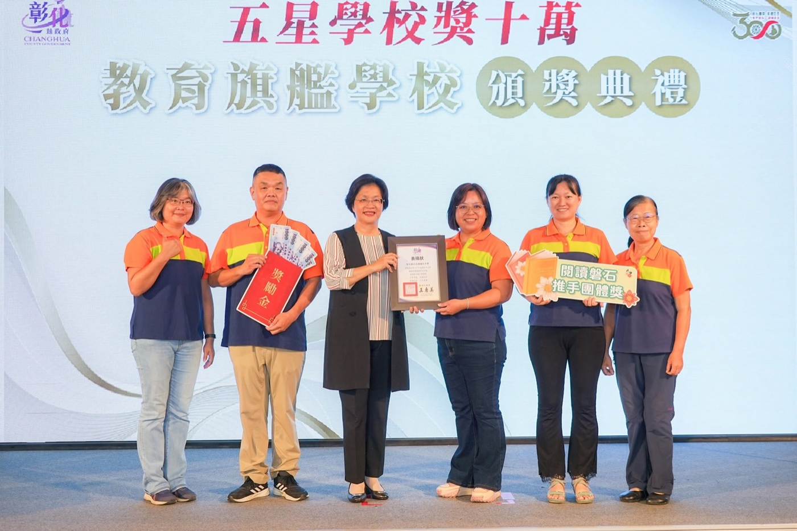
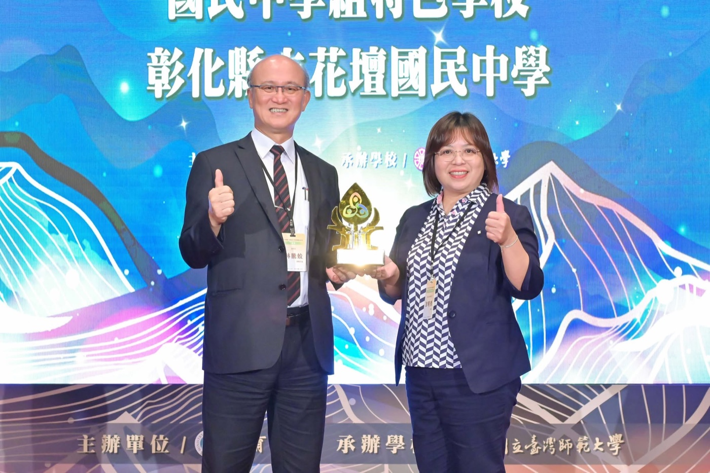
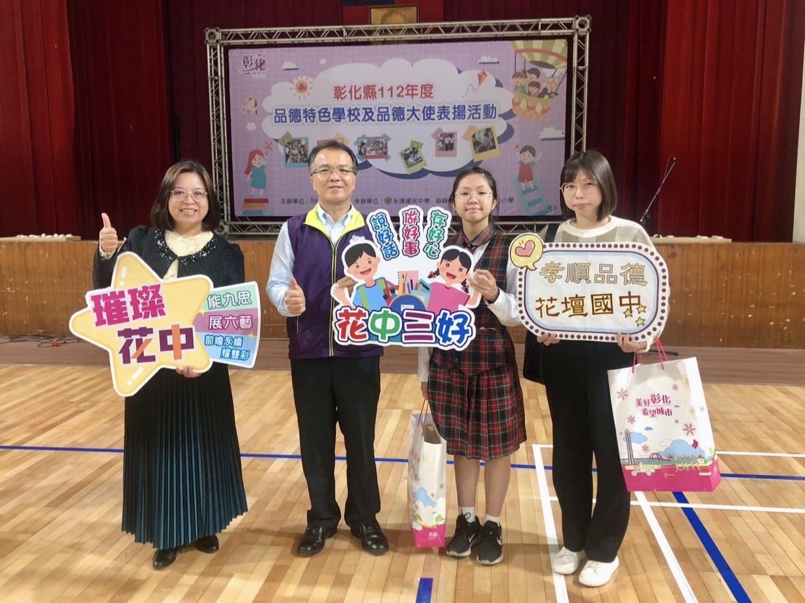
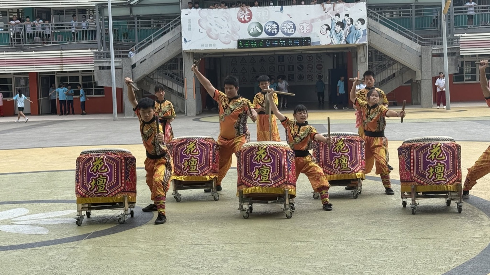
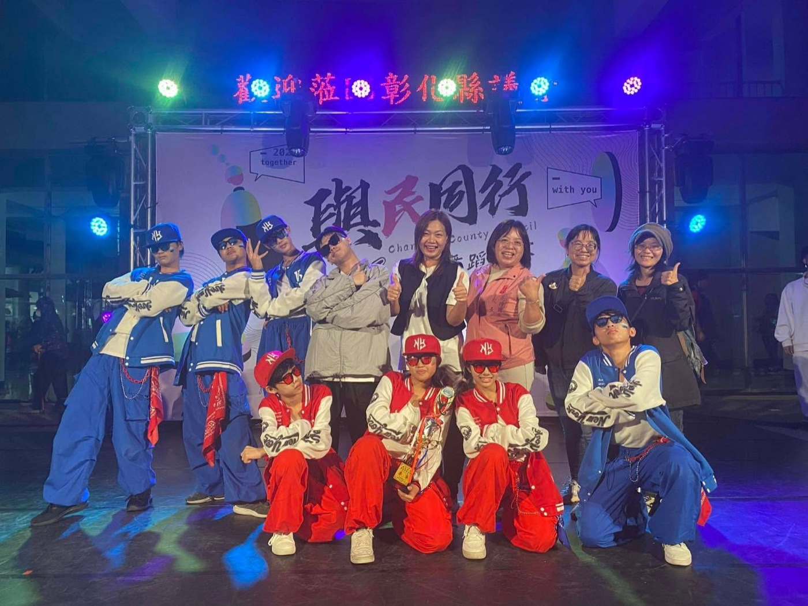
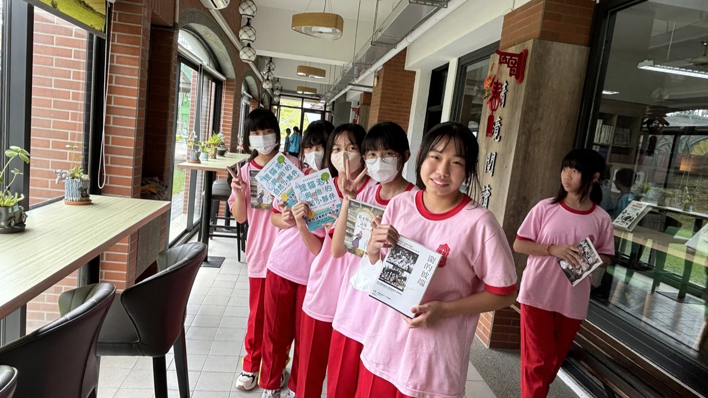
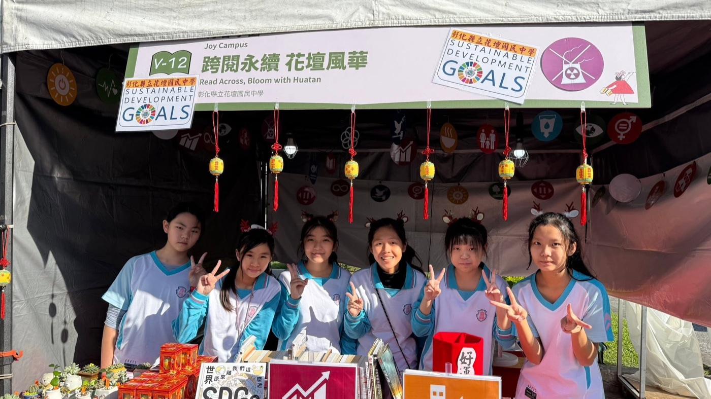
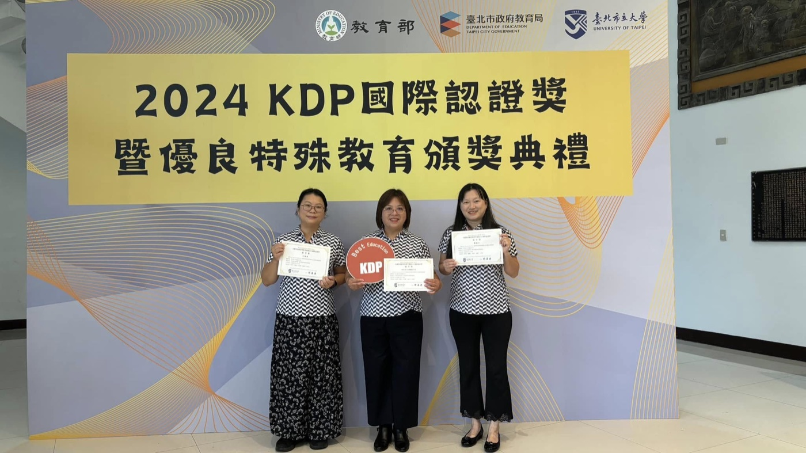
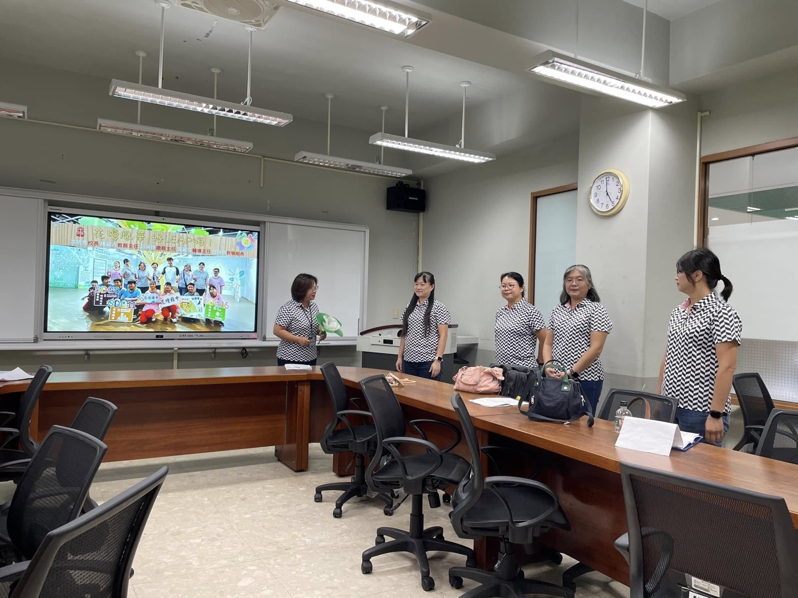

Some honors arrive all at once. Others are the sum of many years, many teachers, many quiet Tuesday afternoons.
This one is both.
On July 28, 2025, Changhua County Magistrate Wang Hui-mei presented Huatan Junior High with a Five-Star School certification — and with it, the county's highest institutional honor: Flagship School (教育旗艦學校) status.
Since 2023, Changhua County has run the Five-Star School program to recognize schools that go beyond the ordinary, rewarding real achievement with grants of up to NT$100,000. In 2025, thirty-seven schools countywide earned Flagship status, together bringing home 69 national and international group awards and NT$3.477 million in county funding. Huatan Junior High was one of them — named specifically for its Character Education distinction, one of four pillars the county evaluated: reading, character, the arts, and school administration.
Huatan didn't earn this in one year. It earned it in four.
Character: Nine Reflections, Lived Daily
In 2024, the Ministry of Education named Huatan a Character Education Featured School — recognition for a framework the school calls 九思 (Nine Reflections), rooted in the Analects and carried into daily life: clarity in sight, respect in manner, honesty in speech. At events across the county, the school's own banner says it best: 能九思，展六藝，前瞻永續耀雙彩 — the same bell-shaped emblem now written into everything from morning assembly to the county spotlight.


The Arts: A Campus That Performs
The Ministry of Education's Arts Education Contribution Award followed in 2025 — proof that an arts education can run as deep as a drum team's rehearsal schedule. Huatan's drum corps, street dance troupe, and leathercraft artisans perform everywhere from county council halls to elementary-school stages, carrying Huatan's name into rooms far beyond its own gates.


Reading: A Cornerstone, Not a Checkbox
Long before any of this started, Huatan built its Reading Cornerstone Award record the slow way — a reading corner students actually want to sit in, a library run for browsing as much as borrowing, and campus reading fairs where sustainability and storytelling share the same tent.


Curriculum: Built by the People Who Teach It
In 2024, Huatan's own administrative team earned the KDP International Certification Award for School Management and Teaching Innovation — recognition for a locally rooted curriculum the team calls 花壇風華，好LEAP海, built through ongoing teacher study groups rather than handed down from above.


Four pillars. One bell-shaped crest. Five stars.
The county's flagship title doesn't belong to one teacher or one year — it belongs to everyone who kept showing up for reading, for character, for art, for a curriculum built to fit Huatan's own students. That is what a small-township school, doing big things, actually looks like.
有些榮耀是一夕之間降臨的，有些則是許多年、許多位老師、許多個平凡週二午後累積出來的。
這一次，兩者兼具。
2025年7月28日，彰化縣長王惠美親自頒發花壇國中「五星學校認證」，同時晉升彰化縣最高等級的辦學榮譽——「教育旗艦學校」。
彰化縣自112年起推動「五星學校認證」制度，鼓勵學校發展特色、追求卓越，每校最高可獲獎勵金十萬元。114年度全縣共有37校榮獲「教育旗艦學校」殊榮，總計拿下69項全國與國際級團體大獎，核發獎勵金高達347萬7,000元。花壇國中正是其中一員——本次獲選的具體依據，是縣府評選的四大面向之一：品德教育特色學校（其餘三項為閱讀、藝術、校務評鑑）。
花壇國中不是一年拿到這份榮耀的，而是四年累積出來的。
品德：九思，落實於日常
2024年，教育部將花壇國中選為「品德教育特色學校」——肯定學校推動的「九思」框架，源自《論語》，落實於日常生活：思明、思恭、思忠等。在縣內各項活動的舞台上，學校自己的標語說得最好：能九思，展六藝，前瞻永續耀雙彩——同一個鐘形校徽，如今從朝會延伸到全縣的鎂光燈下。
藝術：一個會表演的校園
2025年，教育部「藝術教育貢獻獎」接踵而至——證明了藝術教育可以扎根得跟戰鼓隊的練習課表一樣深。花壇國中的戰鼓社、街舞社與皮雕匠人，從縣議會到國小舞台都留下足跡，把花壇的名字帶到校門以外更遠的地方。
閱讀：是基石，不是打卡
早在這一切開始之前，花壇國中就用最踏實的方式累積「閱讀磐石獎」的實力——一個學生真心願意坐下來的共讀角落、一座鼓勵瀏覽而非只是借書的圖書館，以及讓永續議題與說故事共享同一頂帳篷的校園閱讀市集。
課程：由教學現場的人親手打造
2024年，花壇國中的行政團隊榮獲「KDP全國學校經營與教學創新國際認證獎」——肯定這套名為「花壇風華，好LEAP海」的在地課程，是由教師社群持續共備打磨出來的，而非由上而下的規定。
四大支柱，一口鐘形校徽，五顆星。
縣府的旗艦學校榮譽，不屬於某一位老師、也不屬於某一年，而屬於每一位持續在閱讀、品德、藝術、課程上默默耕耘的人。這，才是一所小鄉鎮學校真正能做到的大事。
Tap 🔊 to listen · 點喇叭聽發音
Huatan is now a flagship school.花壇國中如今是一所旗艦學校。
The county grants certification to five-star schools.縣府頒發認證給五星學校。
Character education earned Huatan this distinction.品德教育為花壇國中贏得這項殊榮。
Reading has long been a cornerstone here.閱讀教育一直是這裡的重要基石。
The arts award celebrates years of contribution.藝術貢獻獎表揚多年來的付出。
Teachers built the curriculum together.老師們一起打造了這套課程。
Curriculum leadership takes a whole team.課程領導需要整個團隊的努力。
Four pillars support one flagship title.四大支柱撐起一項旗艦榮譽。
Match the word to its meaning
把英文和中文配對
Matched 配對成功：0 / 8